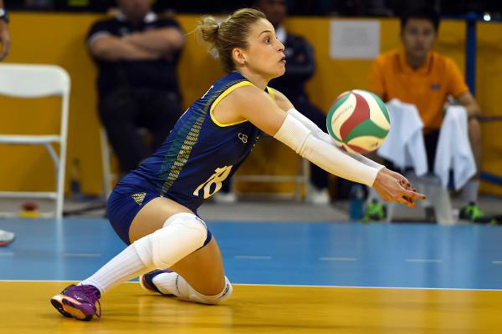
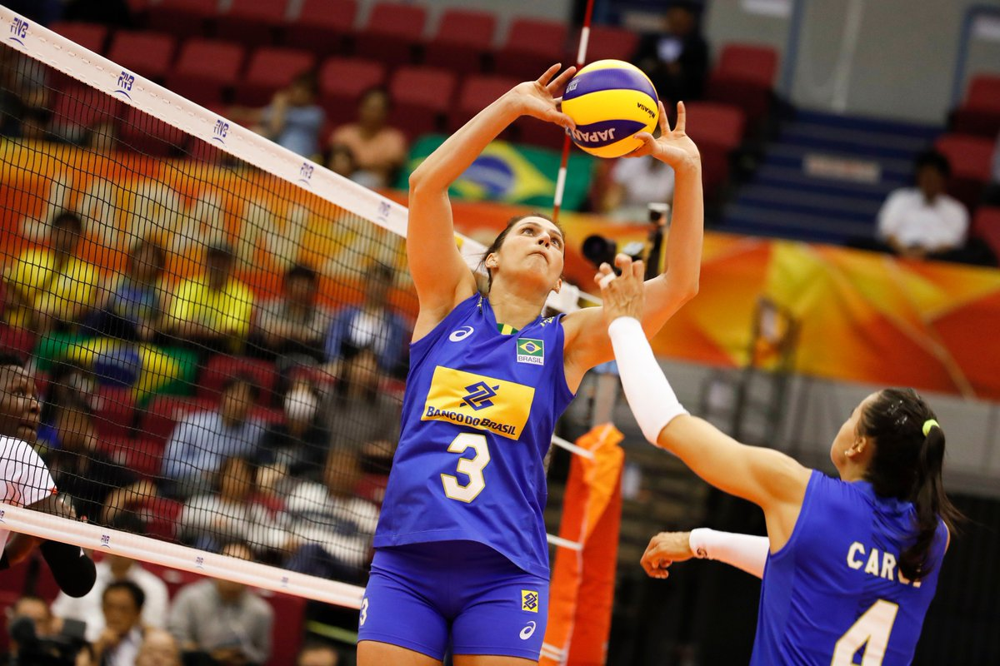
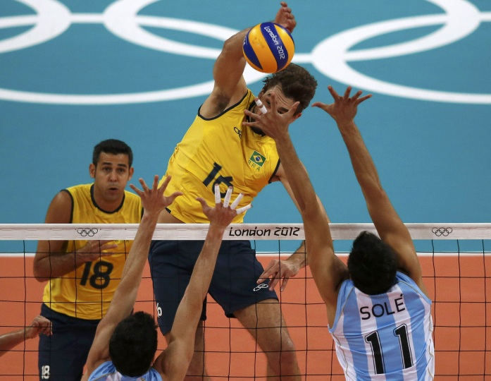
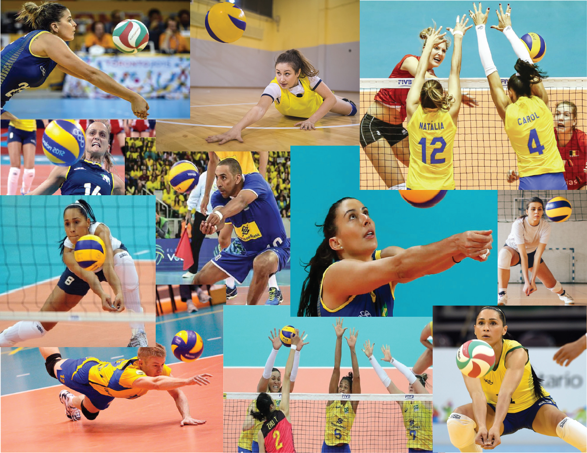

O Saque no vôlei é a ação que coloca a bola em jogo. O sacador, como é chamado o jogador que lança a bola, tem que arremessar a bola por cima da rede e fazê-la entrar na quadra de seu adversário.
O jogador tem que ficar na zona de saque, que é uma área de 9 metros de largura atrás da Linha de Fundo de cada lado da quadra. Se ele ultrapassar o limite, a bola vai retornar para seu adversário sacar. Os principais objetivos do saque são: colocar a bola em jogo, desestabilizar o passe da recepção adversária e dificultar a jogada de ataque.
Exemplo de um saque.
Recepção
A recepção tem como objetivo fazer com que a bola perca força e velocidade, para facilitar para o levantador. A recepção é o primeiro contato de uma equipe com a bola, feita pelo líbero. Para realizar uma recepção, o jogador utiliza manchete ou toque.

Exemplo de uma recepção.
Levantamento
O objetivo do levantamento no voleibol é preparar um ataque, sendo o segundo toque na bola de uma equipe de Voleibol, feito após a Recepção do Saque adversário. É feito pelo levantador, com uma técnica chamada toque ou voleio. Também pode ser feito com a técnica de Manchete, quando a bola estiver muito baixa, ou com uma só mão, que é um recurso técnico avançado.
No vôlei, há três tipos de levantamentos que podem ser utilizados:
Levantamento Alto em Parábola: Pode acontecer após uma Passe ruim vindo da recepção ou defesa da equipe, onde o Levantador tem que se deslocar para longe da rede e usa um Levantamento Alto nas pontos, onde a bola alcança uma grande altura e forma uma parábola
Levantamento médio: É utilizado para ataques do fundo de quadra com o oposto ou ponteiro. O jogador faz um levantamento um pouco mais rápido, o que dificulta o bloqueio.
Levantamento baixo: É um tipo de Levantamento muito rápido, usado para ataques de meio de rede ou bola chutadas nas pontas com o ponteiro ou o oposto.

Exemplo de um levantamento.
Ataque
O ataque é a ação que consiste em bater a bola em direção a quadra adversária, com o objetivo de marcar ponto. Geralmente é feito após o levantamento, sendo o terceiro toque da equipe. O atacante pode acertar a bola com força, realizando uma cortada, ou explorar um espaço vazio na quadra adversária, sem utilizar força, realizando uma largada ou pingada. Os ataques podem ser realizados por qualquer jogador de um time, exceto pelo líbero.

Exemplo de um ataque.
Defesa
Defesa é uma ação que consiste em impedir que o time adversário faça ponto através do ataque deles. Para isso, existe o líbero, uma posição de jogador que sua principal função é defender a área dos ataques do time adversário.
Na defesa há também a posição de expectativa, onde o jogador deve ficar concentrado e com foco na bola, com joelhos semi flexionados, tronco inclinado para frente, pernas afastadas e braços abertos, na expectativa de fazer uma defesa.
Há vários tipos de defesas no voleibol e os principais são: Bloqueio, Manchete, Defesa com Rolamento, Defesa com Mergulho ou Peixinho e Defesa com o Pé.
Bloqueio: O bloqueio é a primeira ação defensiva de uma equipe no vôlei. Nesse movimento, os jogadores saltam verticalmente com os braços esticados e apontados para cima, com as palmas das mãos voltadas na quadra adversária para: bloquear uma ação de ataque da equipe adversária; diminuir o espaço para um ataque; amortecer o ataque adversário. No bloqueio há três tipos: bloqueio simples, duplo e triplo.
Manchete: A manchete é a técnica mais utilizada no vôlei. É feita com as pernas abertas, joelhos flexionados, braços esticados, mãos unidas uma sobre a outra presas pelos dedos polegares e a bola deve ser tocada no antebraço.
Defesa com Rolamento: Essa técnica é utilizada quando a bola está longe do defensor. Ele salta em direção à bola, faz a defesa com manchete ou com apenas um braço e faz o rolamento para finalizar o movimento com segurança.
Defesa com Mergulho ou Peixinho: É uma técnica de defesa com um alto grau de dificuldade, onde a bola está longe do defensor e próxima de tocar na quadra. O jogador desliza no chão e a defesa é usada com um braço esticado entre a quadra e a bola, com a mão fechada ou aberta, encostando a mão no solo da quadra e fazendo com que a bola bata na parte de trás da palma da mão.
Defesa com o pé: No voleibol é permitido utilizar o pé para defender, mas somente em casos específicos, onde o uso das mãos e dos braços não trarão nenhuma vantagem técnica.

Colagem feita no Adobe Illustrator com os tipos de defesas.